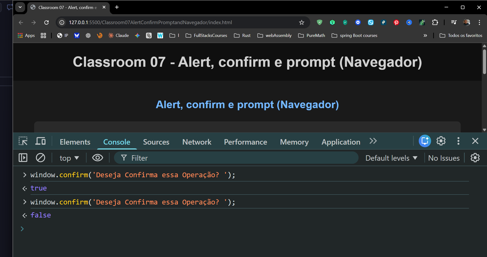
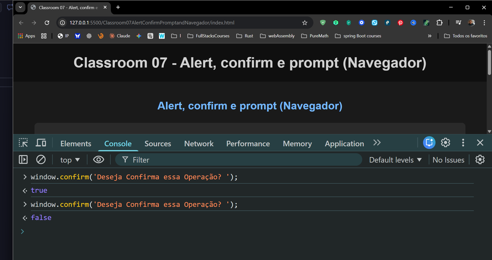
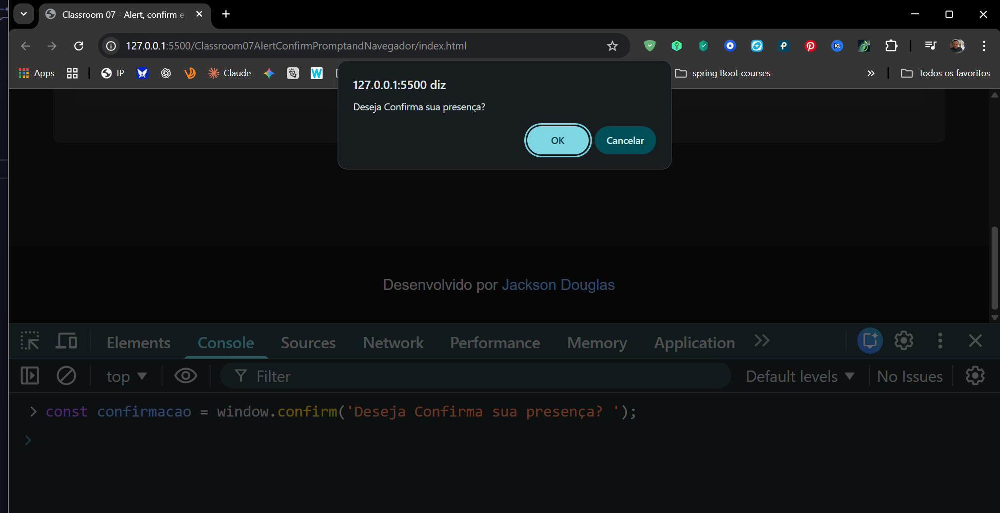
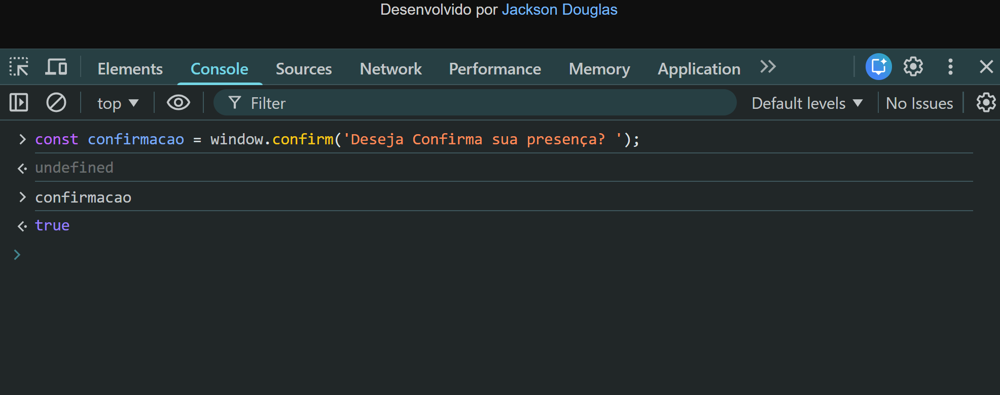
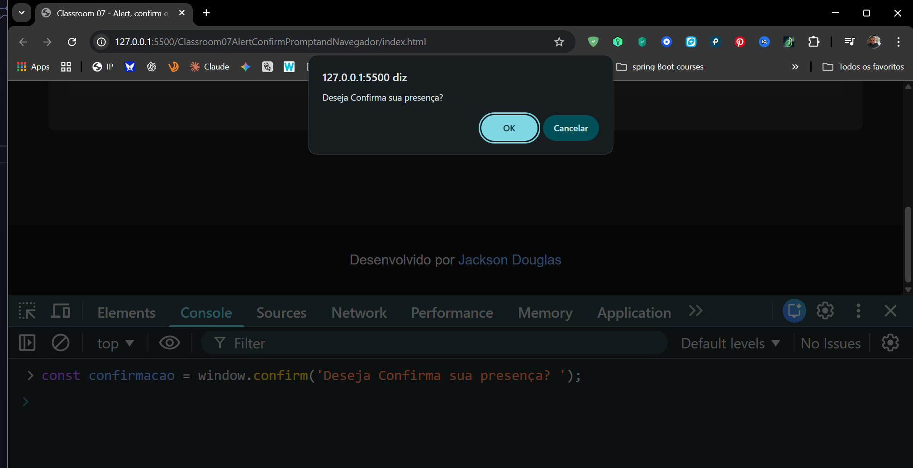
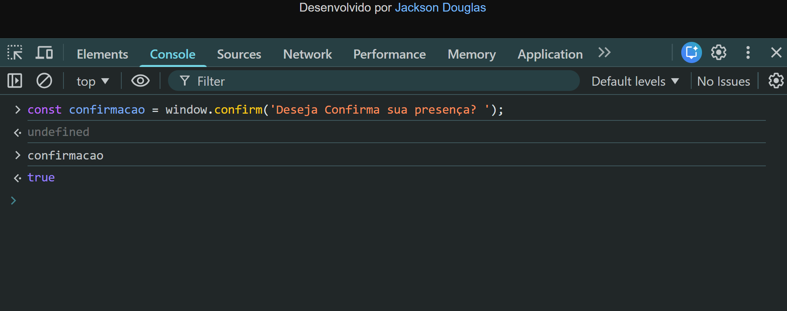
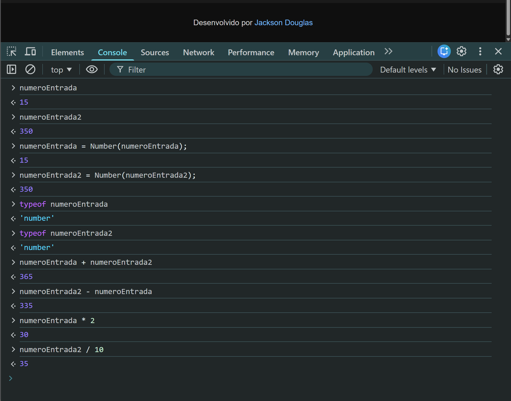
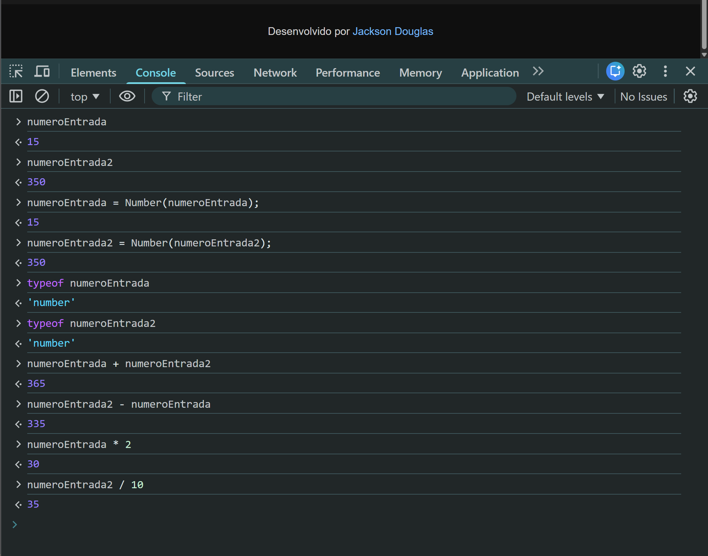

Alert, Confirm e Prompt são três métodos nativos do JavaScript que permitem interação básica com o usuário através de caixas de diálogo no navegador. O alert() exibe uma mensagem simples ao usuário, o confirm() apresenta uma pergunta com opções "OK" e "Cancelar", retornando true ou false, e o prompt() solicita que o usuário insira um valor de texto. Embora sejam úteis para testes rápidos e aprendizado, esses métodos são considerados intrusivos e raramente usados em aplicações modernas, sendo substituídos por interfaces mais sofisticadas e amigáveis.


 


 




 

// Alert, confirm e prompt (Navegador)
//alert('This is an alert message!');
console.log("Hello, welcome to the Classroom07 Alert, Confirm, Prompt, and Navigator example!");
let a, b, c;
a = 10, b = 20, c = 30;
[a, b, c] = [b, c, a]; // Swap values
console.log(`After swapping: b = ${a}, c = ${b}, a = ${c}`);